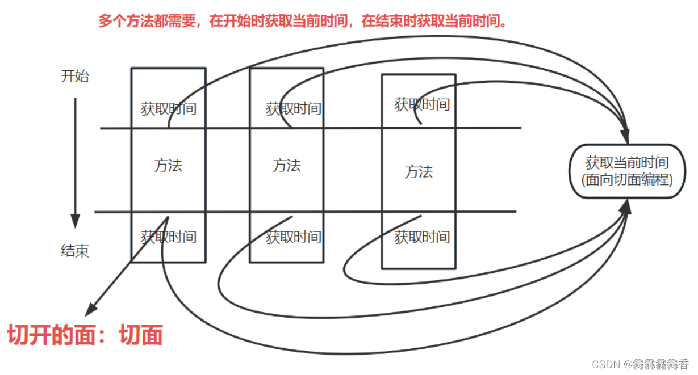

Spring 基础知识
Spring的设计核心
IOC 和 AOP
Spring优缺点
优点：
1、解耦和方便开发：spring容器进行对象的创建和管理
2、AOP支持：面向切面编程，实现日志和权限拦截等功能
3、声明事物的支持：通过配置进行事务管理，不需要手动编写
4、方便集成各种框架
缺点：
1、使用大量反射机制，占内存，不如直接调用效率高；
2、没有做到依赖管理
3、继承的框架耦合度高，不易拆分
IOC是什么
控制反转，将创建对象进行反转，因为正常都是自己去创建对象，现在使用spring容器去创建，根据需求自自动去创建对象。对象实例化，通过spring容器进行创建和管理，spring 通过 DI（数据注入）实现IOC
IOC实现原理
工厂模式加反射机制
AOP是什么
AOP也是以IOC为基础，面向切面编程，抽象化的面向对象，面向对象的补充和完善。面向对象就是把事物的特征和行为抽象为一个对象。

AOP的实现原理
AOP的实现原理是JDK动态代理，代理模式是指给某一个对象提供的一个代理，并由代理对象控制对原对象的引用。代理对象提供与真实对象相同的接口，以便代替真实对象。同时代理对象可以在执行真实对象操作时，附加其他操作。
AOP的基本理念
目标对象（target）：需要被代理的类
连接点（JoinPoint）：程序执行的某一个点，比如某个方法
切面（Aspect）：通常是一个类，里面定义Pointcut（切入点）和Advice（通知）
切入点（Pointcut）：用来指定需要将Advice（通知）使用到哪些地方
通知（Advice）：所要增强或增加到功能
织入（weave）：把切面应用到目标对象，并创建新的代理对象的过程
引入（introduction）：在不修改代码的前提下，可以在运行期，为类动态地增加一些方法或字段
Advice（通知）的类型有哪些
1、前置通知（before advice）：在目标方法执行前执行。
2、后置通知（after advice）：在目标方法执行后执行。
3、环绕通知（around）：在目标方法调用前后均可执行自定义逻辑。
4、返回通知（after returning advice）：在目标方法返回结果之后执行。
5、异常通知（after throwing advice）：在目标方法抛出异常之后执行。
AOP的应用场景
日志记录、事务、权限管理、缓存、懒加载、内容传递、错误处理、调试、性能优化、持久化、资源池、同步、记录跟踪优化校准
Spring中bean的作用域
1、signleton（单例模式）：默认作用域，在spring容器中一个bean只创建一个实例，所有对bean的请求和引用都会返回这个实例。适用都是无状态的bean
2、prototype（原型模式）：每次请求都会为bean创建一个实例，适用都是有状态的bean
3、request（请求作用域）：为每一个HTTP请求创建一个实例，在请求完成后，bean会失效，被垃圾回收器回收；
4、session（会话作用域）：为每一个HTTP会话创建一个实例，不同会话使用不同实例，session销毁，bean失效。
spring中bean的注入方式
1、构造器注入
2、setter注入
Bean Factory和ApplicationContext有什么区别
spring 的核心接口，都可以作为容器，ApplicationContext说Bean Factory的子接口。
Bean Factory：spring最底层的接口，包含各种bean定义和bean 的管理
ApplicationContext：Bean Factory的派生，除了有bean Factory的功能外，还提供了更多的功能。
区别：
1、Bean Factory采用的是延迟加载形式注入bean，使用到bean才会加载，ApplicationContext是一次性加载所有bean
2、BeanFactory需要手动注册，ApplicationContext是自动注册
3、BeanFacotry不支持国际化
循环依赖的时候怎么解决
循环依赖：A依赖B，B依赖C，C依赖A
1、构造器构成的循环依赖：这种依赖spring处理不了，直接抛出异常
2、单例模式下setter循环依赖：通过三级缓存处理循环依赖
3、多例模式下setter循环依赖：不能处理，会一直产生新的bean，导致内存耗尽
Spring中单例bean是线程安全吗
不是，因为所有线程共享一个单例bean，存在资源竞争，所以线程不安全。实际上，大部分情况bean是无状态的，所以在某种程度上来说bean是安全的。
Spring如何处理线程的并发问题
1、把成员变量写在方法里
2、使用ThreadLoacl，ThreadLocal会为每一个线程提供一个独立的变量副本，从而隔离了多个线程对数据的访问冲突。
3、修改bean的作用域，singleton改为protorype（@Scope(“protorype”)）
4、 使用synchronized修饰
Spring事务的实现方式有哪些
编程时：begin Transaction、commit、rollback等事务管理相关的方法，灵活度高，但是维护性差。
声明式：利用注解或xml配置，将业务和事务分离出来
Spring 的事务隔离
spring事务就是对数据库事务的支持
五大隔离级别：
ISOLATION_DEFAULT：默认值，使用数据库的隔离级别
ISOLATION_READ_UNCOMMITTED：读未提交
ISOLATION_READ_COMMITTED：读已提交
ISOLATION_REPEATABLE_READ：可重复读
ISOLATION_SERIALIZABLE：序列化
Spring事务的传播行为
required （默认）：默认事务传播行为，存在一个事务，则支持当前事务。如果没有事务，则开启一个新的事务
required_new：创建一个新的事务，如果当前存在事务，则把当前事务挂起
nested：如果当前存在事务，就嵌套当前事务中执行，如果当前没有事务，就新建一个事务，蕾丝required_new的传播行为
supports：表示支持当前的事务，如果当前不存在事务，则以非事务的方式执行
not_supports：总是以非事务执行，并挂起任何存在的事务
mandatory：如果已经存在一个事务，支持当前事务。如果没有一个活动的事务，则抛出异常
never：总是以非事务执行，如果存在事务则抛出一个异常